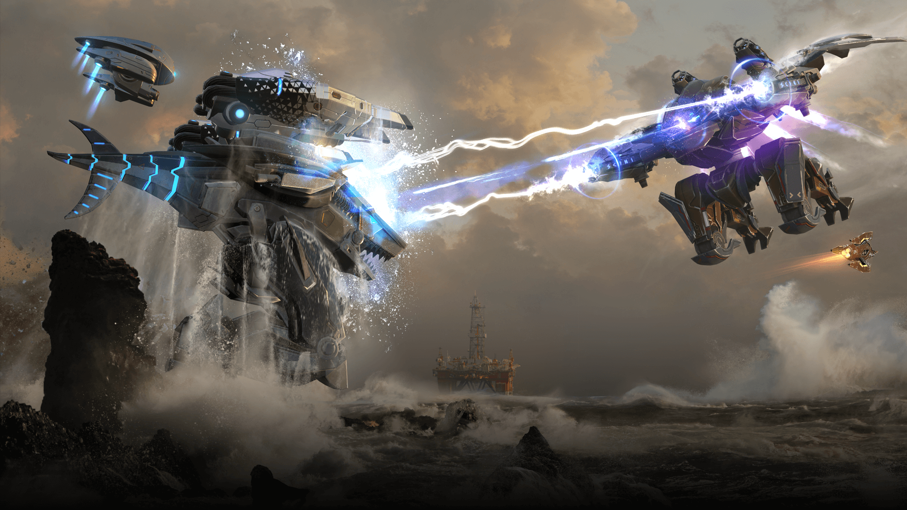

¿Qué es War Robots?
War Robots es un videojuego multijugador en línea centrado en combates tácticos entre robots gigantes controlados por jugadores de todo el mundo. Cada partida enfrenta a dos equipos que luchan por el control del mapa mediante balizas y eliminación de enemigos. El juego combina acción en tiempo real con estrategia, ya que la elección del robot, sus armas y su rol dentro del equipo es clave para la victoria. Dentro de su universo, los Titanes representan la máxima expresión del poder militar en el campo de batalla.
Mi Titan favorito
Bersagliere
Bersagliere es un Titán enfocado en la potencia de fuego táctica y la movilidad, lo que lo convierte en una amenaza constante desde media y larga distancia. Su diseño permite reposicionarse rápidamente, castigando al enemigo antes de que pueda reaccionar. Sin embargo, no es un titán indulgente: su baja resistencia obliga al jugador a pensar cada movimiento y aprovechar el entorno para sobrevivir. En manos cuidadosas, Bersagliere puede dominar la batalla sin exponerse innecesariamente.
Mis 5 robots favoritos
Pathfinder
Pathfinder es un robot altamente estratégico que destaca por su capacidad de mejorarse a sí mismo y fortalecer a sus aliados durante el combate. Su sinergia con el equipo lo convierte en una pieza clave en enfrentamientos prolongados. No obstante, su resistencia limitada exige mantener una distancia adecuada del enemigo y jugar de forma inteligente. Bien utilizado, puede inclinar la balanza de la partida a favor de su equipo.
Raptor
Raptor es mi tanque favorito por excelencia y un clásico que nunca pasa de moda. Su arma integrada le permite ejercer presión constante, mientras que su habilidad de salto reflector lo vuelve extremadamente difícil de derribar. Es ideal para liderar avances y absorber daño enemigo sin perder presencia ofensiva. Raptor representa fuerza, resistencia y control del campo de batalla.
Sword Unit-190
Sword Unit-190 es mi elección preferida cuando se trata de enfrentar Titanes enemigos. Diseñado específicamente como un robot matatitantes, castiga duramente a estos gigantes y demuestra que no son invencibles. Su estilo de juego es agresivo y directo, premiando al jugador que sabe cuándo atacar sin miedo. Es una excelente opción para cambiar el rumbo de una partida dominada por Titanes.
Crisis
Crisis es un robot táctico y quirúrgico, ideal para jugadores pacientes y calculadores. Su especialidad es el combate a larga distancia, manteniendo al enemigo bajo presión constante sin exponerse demasiado. Es perfecto para controlar zonas clave del mapa y debilitar objetivos importantes antes de un enfrentamiento directo. Su precisión lo convierte en un arma estratégica más que en fuerza bruta.
Nuo
Nuo destaca como un robot de apoyo aéreo, proporcionando asistencia directa a aliados clave como tanques o Titanes. Su movilidad le permite reaccionar rápidamente a las necesidades del equipo y reforzar puntos críticos del combate. Aunque no está pensado para enfrentamientos prolongados en solitario, su impacto en equipo es invaluable. Bien coordinado, Nuo marca la diferencia en batallas cerradas.
Mención honorífica
Skyros
Skyros no es el robot más divertido de usar, pero cumple una función vital en cualquier partida: la captura de balizas. Su movilidad y resistencia lo hacen ideal para asegurar objetivos estratégicos desde el inicio del combate. Aunque no brille en daño, su utilidad táctica justifica plenamente su lugar como mención honorífica dentro del hangar.
Clasificación de robots de mi hangar
| Robot | Categoría |
|---|---|
| Bersagliere (Titán favorito) | Titán táctico |
| Pathfinder | Soporte / Sinergia |
| Raptor | Tanque |
| Sword Unit-190 | Asesino de titanes |
| Crisis | Francotirador / Táctico |
| Nuo | Apoyo aéreo |
| Skyros | Captura balizas / Apoyo estratégico |